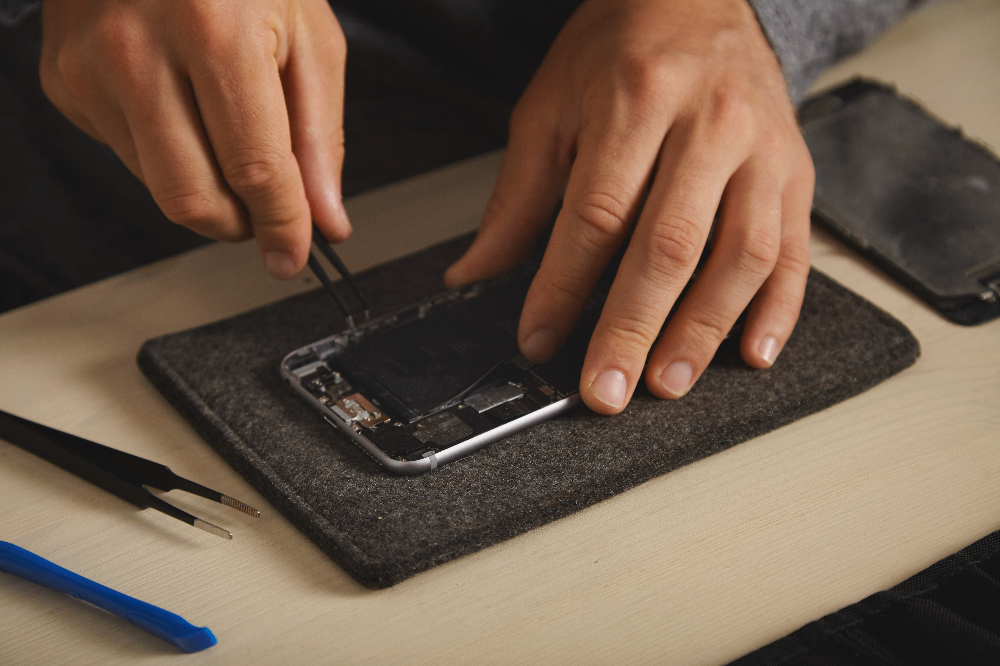
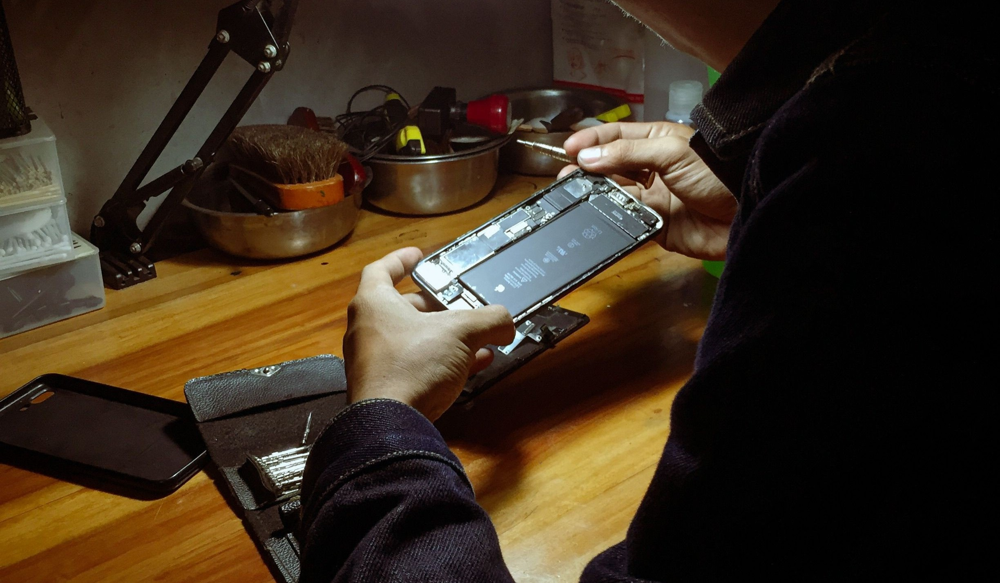
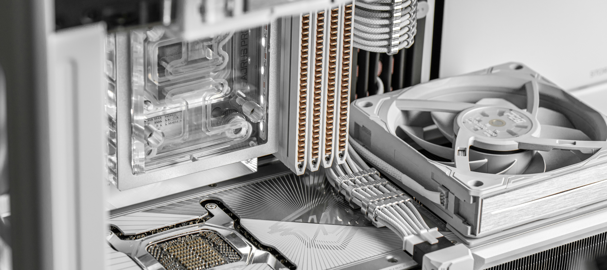
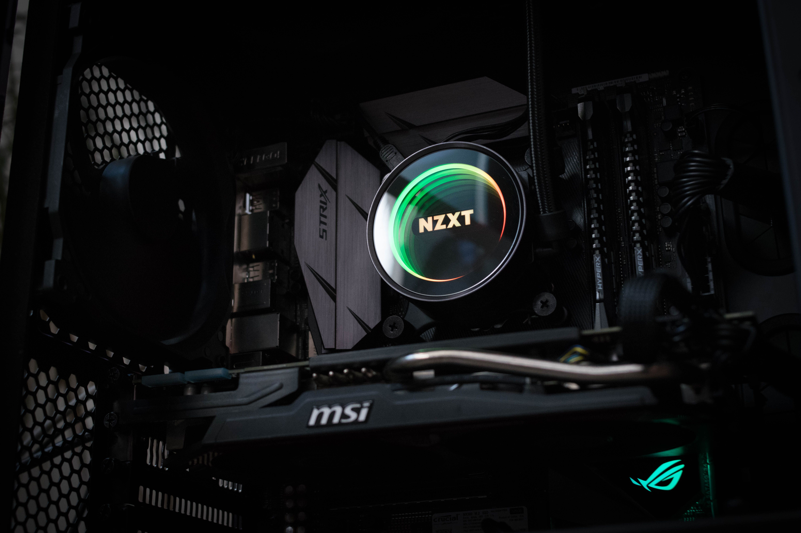

01
Phone Repairs
From damaged screens to charging problems and everything in between, we provide repairs for phones of all kinds.
Explore phone repairs →Local technology services in Warrington
Phone repairs, PC repairs, diagnostics and custom-built PCs — all from a local, personal service.

Why WA4TechSOS
WA4TechSOS is a Warrington-based technology service focused on making repairs and PC building straightforward.
Whether your phone has stopped working, your PC isn't behaving or you're looking for a custom-built machine, we'll help identify what you need and explain it clearly.
What we do
01
From damaged screens to charging problems and everything in between, we provide repairs for phones of all kinds.
Explore phone repairs →
02
Hardware problems, software issues, upgrades and general troubleshooting.
Explore PC repairs →
03
Not sure what's wrong? We'll find the problem and give you a clear quote before any repair.

04
Tell us your budget and what you want your PC to do. We'll choose the components, build it and test it for you.
Explore custom PCs →Custom PC builds
Whether you're building your first gaming PC or upgrading to something more powerful, tell us your budget and what you need it for.
Start your build
How it works
Get in touch and tell us what's wrong with your device or what you're looking for.
We'll investigate the problem and explain what's causing it.
You'll know what needs doing and how much it will cost before the repair.
Once you're happy to go ahead, we'll get your technology working again.
What sets us apart
Based in Warrington and focused on serving the local community.
Speak directly to the person working on your technology.
We'll explain what's wrong in a way that actually makes sense.
A local alternative to expensive high-street repair services.
Customer reviews
Customer reviews will appear here once WA4TechSOS begins serving customers.
Genuine customer feedback will be displayed here.
View reviews →Need help?
Tell us what's wrong, what you need, or what you'd like us to build.
Get a Quote